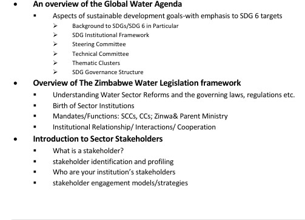
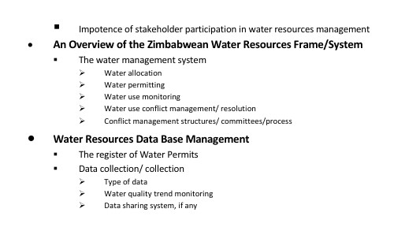

Corporate governance
Board induction, governance training, ethics, code-of-ethics development and practical accountability support.
Consulting & training
We help organisations turn priorities into practical systems, with facilitated training and management consultancy tailored to their context.
Support areas

Board induction, governance training, ethics, code-of-ethics development and practical accountability support.

Strategic-management workshops, organisational risk assessment, gap analysis and results-based management services.

Business development, project-design reviews, contract-management reviews, monitoring and evaluation support.
Facilitation
We facilitate stakeholder mobilisation, capacity workshops and policy or strategy formulation with a focus on clarity, ownership and implementable next steps.